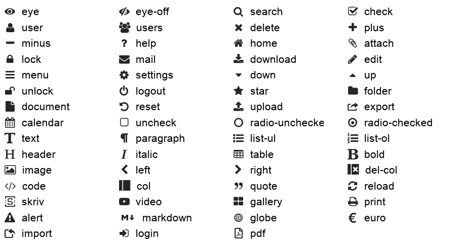

Permet d'assigner une valeur dans une variable.
| Paramètre | Optionnel / obligatoire ? | Fonction |
|---|---|---|
. |
optionnel | Assigner toutes les variables du contexte (section) actuel |
var |
optionnel | Nom de la variable à créer ou modifier |
value |
optionnel | Valeur de la variable |
from |
optionnel | Recopier la valeur depuis la variable ayant le nom fourni dans ce paramètre. |
Tous les autres paramètres sont considérés comme des variables à assigner.
Exemple :
{{:assign blabla="Coucou"}}
{{$blabla}}Il est possible d'assigner toutes les variables d'une section dans une variable en utilisant le paramètre point . (.="nom_de_variable"). Cela permet de capturer le contenu d'une section pour le réutiliser à un autre endroit.
{{#pages uri="Informations" limit=1}}
{{:assign .="infos"}}
{{/pages}}
{{$infos.title}}Il est aussi possible de remonter dans les sections parentes en utilisant plusieurs points. Ainsi deux points remonteront à la section parente, trois points à la section parente de la section parente, etc.
{{#foreach from=$infos item="info"}}
{{#foreach from=$info item="sous_info"}}
{{if $sous_info.titre == 'Coucou'}}
{{:assign ..="info_importante"}}
{{/if}}
{{/foreach}}
{{/foreach}}
{{$info_importante.titre}}En utilisant le paramètre spécial var, tous les autres paramètres passés sont ajoutés à la variable donnée en valeur :
{{:assign var="tableau" label="Coucou" name="Pif le chien"}}
{{$tableau.label}}
{{$tableau.name}}De la même manière on peut écraser une variable avec le paramètre spécial value:
{{:assign var="tableau" value=$infos}}Il est également possible de créer des tableaux avec la syntaxe . dans le nom de la variable :
{{:assign var="liste.comptes.530" label="Caisse"}}
{{:assign var="liste.comptes.512" label="Banque"}}
{{#foreach from=$liste.comptes}}
{{$key}} = {{$value.label}}
{{/foreach}}Il est possible de rajouter des éléments à un tableau simplement en utilisant un point seul :
{{:assign var="liste.comptes." label="530 - Caisse"}}
{{:assign var="liste.comptes." label="512 - Banque"}}Enfin, il est possible de faire référence à une variable de manière dynamique en utilisant le paramètre spécial from :
{{:assign var="tableau" a="Coucou" b="Test !"}}
{{:assign var="titre" from="tableau.%s"|args:"b"}}
{{$titre}} -> Affichera "Test !", soit la valeur de {{$tableau.b}}Interrompt une section.
Passe à l'itération suivante d'une section. Le code situé entre cette instruction et la fin de la section ne sera pas exécuté.
{{#foreach from=$list item="event"}}
{{if $event.date == '2023-01-01'}}
{{:continue}}
{{/if}}
{{$event.title}}
{{/foreach}}Il est possible de passer à l'itération suivante d'une section parente en utilisant un chiffre en paramètre :
{{#foreach from=$list item="event"}}
{{$event.title}}
{{#foreach from=$event.people item="person"}}
{{if $person.name == 'bohwaz'}}
{{:continue 2}}
{{/if}}
- {{$person.name}}
{{/foreach}}
{{/foreach}}Cette fonction permet d'afficher le contenu d'une ou plusieurs variables :
{{:debug test=$title}}Affichera :
array(1) {
["test"] => string(6) "coucou"
}Si aucun paramètre n'est spécifié, alors toutes les variables définies sont renvoyées. Utile pour découvrir quelles sont les variables accessibles dans une section par exemple.
Affiche un message d'erreur et arrête le traitement à cet endroit.
| Paramètre | Optionnel / obligatoire ? | Fonction |
|---|---|---|
message |
obligatoire | Message d'erreur à afficher |
Exemple :
{{if $_POST.nombre != 42}}
{{:error message="Le nombre indiqué n'est pas 42"}}
{{/if}}Affiche les erreurs du formulaire courant (au format HTML).
Permet de modifier les entêtes HTTP renvoyés par la page. Cette fonction doit être appelée au tout début du squelette, avant tout autre code ou ligne vide.
| Paramètre | Optionnel / obligatoire ? | Fonction |
|---|---|---|
code |
optionnel | Modifie le code HTTP renvoyé. Liste des codes HTTP |
redirect |
optionnel | Rediriger vers l'adresse URL indiquée en valeur. |
type |
optionnel | Modifie le type MIME renvoyé |
download |
optionnel | Force la page à être téléchargée sous le nom indiqué. |
inline |
optionnel | Force la page à être affichée, et peut ensuite être téléchargée sous le nom indiqué (utile pour la généraion de PDF : permet d'afficher le PDF dans le navigateur avant de le télécharger). |
Note : si le type application/pdf est indiqué (ou juste pdf), la page sera convertie en PDF à la volée. Il est possible de forcer le téléchargement du fichier en utilisant le paramètre download.
Exemples :
{{:http code=404}}
{{:http redirect="/Nos-Activites/"}}
{{:http redirect="https://mon-site-web.tld/"}}
{{:http type="application/svg+xml"}}
{{:http type="pdf" download="liste_membres_ca.pdf"}}Permet d'inclure un autre squelette.
Paramètres :
| Paramètre | Optionnel / obligatoire ? | Fonction |
|---|---|---|
file |
obligatoire | Nom du squelette à inclure |
keep |
optionnel | Liste de noms de variables à conserver |
capture |
optionnel | Si renseigné, au lieu d'afficher le squelette, son contenu sera enregistré dans la variable de ce nom. |
| … | optionnel | Tout autre paramètre sera utilisé comme variable qui n'existea qu'à l'intérieur du squelette inclus. |
{{* Affiche le contenu du squelette "navigation.html" dans le même répertoire que le squelette d'origine *}}
{{:include file="./navigation.html"}}Par défaut, les variables du squelette parent sont transmis au squelette inclus, mais les variables définies dans le squelette inclus ne sont pas transmises au squelette parent. Exemple :
{{* Squelette page.html *}}
{{:assign title="Super titre !"}}
{{:include file="./_head.html"}}
{{$nav}}{{* Squelette _head.html *}}
<h1>{{$title}}</h1>
{{:assign nav="Accueil > %s"|args:$title}}Dans ce cas, la dernière ligne du premier squelette ({{$nav}}) n'affichera rien, car la variable définie dans le second squelette n'en sortira pas. Pour indiquer qu'une variable doit être transmise au squelette parent, il faut utiliser le paramètre keep:
{{:include file="./_head.html" keep="nav"}}On peut spécifier plusieurs noms de variables, séparés par des virgules, et utiliser la notation à points :
{{:include file="./_head.html" keep="nav,article.title,name"}}
{{$nav}}
{{$article.title}}
{{$name}}On peut aussi capturer le résultat d'un squelette dans une variable :
{{:include file="./_test.html" capture="test"}}
{{:assign var="test" value=$test|replace:'TITRE':'Ceci est un titre'}}
{{$test}}Il est possible d'assigner de nouvelles variables au contexte du include en les déclarant comme paramètres tout comme on le ferait avec {{:assign}} :
{{:include file="./_head.html" title='%s documentation'|args:$doc.label visitor=$user}}Permet de générer une question qui doit être répondue correctement par l'utilisateur pour valider une action. Utile pour empêcher les robots spammeurs d'effectuer une action.
L'utilisation simplifiée utilise un de ces deux paramètres :
| Paramètre | Fonction |
|---|---|
html |
Si true, crée un élément de formulaire HTML et le texte demandant à l'utilisateur de répondre à la question |
verify |
Si true, vérifie que l'utilisateur a correctement répondu à la question |
L'utilisation avancée utilise d'abord ces deux paramètres :
| Paramètre | Fonction |
|---|---|
assign_hash |
Nom de la variable où assigner le hash (à mettre dans un <input type="hidden" />) |
assign_number |
Nom de la variable où assigner le nombre de la question (à afficher à l'utilisateur) |
Puis on vérifie :
| Paramètre | Fonction |
|---|---|
verify_hash |
Valeur qui servira comme hash de vérification (valeur du <input type="hidden" />) |
verify_number |
Valeur qui représente la réponse de l'utilisateur |
assign_error |
Si spécifié, le message d'erreur sera placé dans cette variable, sinon il sera affiché directement. |
Exemple :
{{if $_POST.send}}
{{:captcha verify_hash=$_POST.h verify_number=$_POST.n assign_error="error"}}
{{if $error}}
<p class="alert">Mauvaise réponse</p>
{{else}}
...
{{/if}}
{{/if}}
<form method="post" action="">
{{:captcha assign_hash="hash" assign_number="number"}}
<p>Merci de recopier le nombre suivant en chiffres : <tt>{{$number}}</tt></p>
<p>
<input type="text" name="n" placeholder="1234" />
<input type="hidden" name="h" value="{{$hash}}" />
<input type="submit" name="send" />
</p>
</form>Permet d'envoyer un e-mail à une ou des adresses indiquées (sous forme de tableau).
Restrictions :
https://...) autre que celle de l'association.Note : il est également conseillé d'utiliser la fonction captcha pour empêcher l'envoi de spam.
| Paramètre | Obligatoire ou optionnel ? | Fonction |
|---|---|---|
to |
obligatoire | Adresse email destinataire (seule l'adresse e-mail elle-même est acceptée, pas de nom) |
subject |
obligatoire | Sujet du message |
body |
obligatoire | Corps du message |
block_urls |
optionnel | (true ou false) Permet de bloquer l'envoi si le message contient une adresse https://… |
attach_file |
optionnel | Chemin vers un ou plusieurs documents à joindre au message (situé dans les documents) |
attach_from |
optionnel | Chemin vers un ou plusieurs squelettes à joindre au message (par exemple pour joindre un document généré) |
Pour le destinataire, il est possible de spécifier un tableau :
{{:assign var="recipients[]" value="membre1@framasoft.net"}}
{{:assign var="recipients[]" value="membre2@chatons.org"}}
{{:mail to=$recipients subject="Coucou" body="Contenu du message\nNouvelle ligne"}}Exemple de formulaire de contact :
{{if !$_POST.email|check_email}}
<p class="alert">L'adresse e-mail indiquée est invalide.</p>
{{elseif $_POST.message|trim == ''}}
<p class="alert">Le message est vide</p>
{{elseif $_POST.send}}
{{:captcha verify=true}}
{{:mail to=$config.org_email subject="Formulaire de contact" body="%s a écrit :\n\n%s"|args:$_POST.email:$_POST.message block_urls=true}}
<p class="ok">Votre message nous a bien été transmis !</p>
{{/if}}
<form method="post" action="">
<dl>
<dt><label>Votre e-mail : <input type="email" required name="email" /></label></dt>
<dt><label>Votre message : <textarea required name="message" cols="50" rows="5"></textarea></label></dt>
<dt>{{:captcha html=true}}</dt>
</dl>
<p><input type="submit" name="send" value="Envoyer !" /></p>
</form>Redirige vers une nouvelle page.
Avec le paramètre force, si la page actuelle est ouverte dans une fenêtre modale (grâce à la cible _dialog), alors la fenêtre modale est fermée, et la redirection se passe dans la page parente.
Avec le paramètre to, si la page actuelle est ouverte dans une fenêtre modal (grâce à la cible _dialog), alors la fenêtre modale est fermée, et la page parente est rechargée. Si la page n'est pas ouvertre dans dans une fenêtre modale, la redirection est effectuée.
Seules les adresses internes sont acceptées, il n'est pas possible de rediriger vers une adresse extérieure.
| Paramètre | Obligatoire ou optionnel ? | Fonction |
|---|---|---|
force |
optionnel | Adresse de redirection forcée |
to |
optionnel | Adresse de redirection si pas dans une fenêtre modale |
Si to=null est utilisé, alors la fenêtre modale sera fermée. Ou, si la page n'est pas dans une fenêtre modale, la page courante sera rechargée.
Enregistre des données, sous la forme d'un document, dans la base de données, pour le module courant.
| Paramètre | Obligatoire ou optionnel ? | Fonction |
|---|---|---|
key |
optionnel | Clé unique du document |
id |
optionnel | Numéro unique du document |
validate_schema |
optionnel | Fichier de schéma JSON à utiliser pour valider les données avant enregistrement |
validate_only |
optionnel | Liste des paramètres à valider (par exemple pour ne faire qu'une mise à jour partielle), séparés par des virgules. |
assign_new_id |
optionnel | Si renseigné, le nouveau numéro unique du document sera indiqué dans cette variable. |
| … | optionnel | Autres paramètres : traités comme des valeurs à enregistrer dans le document |
Si ni key ni id ne sont indiqués, un nouveau document sera créé avec un nouveau numéro (ID) unique.
Si le document indiqué existe déjà, il sera mis à jour. Les valeurs nulles (NULL) seront effacées.
{{:save key="facture_43" nom="Atelier mobile" montant=250}}Enregistrera dans la base de données le document suivant sous la clé facture_43 :
{"nom": "Atelier mobile", "montant": 250}Exemple de mise à jour :
{{:save key="facture_43" montant=300}}Exemple de récupération du nouvel ID :
{{:save titre="Coucou !" assign_new_id="id"}}
Le document n°{{$id}} a bien été enregistré.{{:save titre="Coucou" texte="Très long" validate_schema="./document.schema.json"}}Pour ne valider qu'une partie du schéma, par exemple si on veut faire une mise à jour du document :
{{:save key="test" titre="Coucou" validate_schema="./document.schema.json" validate_only="titre"}}Supprime un document lié au module courant.
| Paramètre | Obligatoire ou optionnel ? | Fonction |
|---|---|---|
key |
optionnel | Clé unique du document |
id |
optionnel | Numéro unique du document |
Il est possible de spécifier d'autres paramètres, ou une clause where et des paramètres dont le nom commence par deux points.
facture_43 : {{:delete key="facture_43"}}ABCD et dont la propriété type du document correspond à la valeur facture : {{:delete key="ABCD" type="facture"}}{{:delete}}facture : {{:delete type="facture"}}devis ayant une date dans le passé : {{:delete :type="devis" where="$$.type = :type AND $$.date < datetime()"}}Lire un fichier stocké dans les fichiers du code du module.
| Paramètre | Obligatoire ou optionnel ? | Fonction |
|---|---|---|
file |
obligatoire | Chemin du fichier à lire |
assign |
optionnel | Variable dans laquelle placer le contenu du fichier. |
Si le paramètre assign n'est pas utilisé, le contenu du fichier sera affiché directement.
Exemple pour lire un fichier JSON :
{{#read file="baremes.json" assign="baremes"}}
{{:assign baremes=$baremes|json_decode}}
Barème kilométrique pour une voiture de 3 CV : {{$baremes.voiture.3cv}}Exemple pour lire un fichier CSV :
{{#read file="baremes.csv" assign="baremes"}}
{{:assign baremes=$baremes|trim|explode:"\n"}}
{{#foreach from=$baremes item="line"}}
{{:assign bareme=$line|str_getcsv}}
Nom du barème : {{$bareme.0}}
Calcul : {{$bareme.1}}
{{/foreach}}Affiche l'entête de l'administration de l'association.
| Paramètre | Obligatoire ou optionnel ? | Fonction |
|---|---|---|
title |
optionnel | Titre de la page |
layout |
optionnel | Aspect de la page. Peut être public pour une page publique simple (sans le menu), ou raw pour une page vierge (sans aucun menu ni autre élément). Défaut : vide (affichage du menu) |
current |
optionnel | Indique quel élément dans le menu de gauche doit être marqué comme sélectionné |
custom_css |
optionnel | Fichier CSS supplémentaire à appeler dans le <head> |
{{:admin_header title="Gestion des dons" current="acc"}}Liste des choix possibles pour current :
home : menu Accueilusers : menu Membresusers/new : sous-menu "Ajouter" de Membresusers/services : sous-menu "Activités et cotisations" de Membresusers/mailing : sous-menu "Message collectif" de Membresacc : menu Comptabilitéacc/new : sous-menu "Saisie" de Comptabilitéacc/accounts : sous-menu "Comptes"acc/simple : sous-menu "Suivi des écritures"acc/years : sous-menu "Exercices et rapports"docs : menu Documentsweb : menu Site webconfig : menu Configurationme : menu "Mes infos personnelles"me/services : sous-menu "Mes activités et cotisations"Exemple d'utilisation de custom_css depuis un module :
{{:admin_header title="Mon module" custom_css="./style.css"}}Affiche le pied de page de l'administration de l'association.
{{:admin_footer}}Affiche un formulaire demandant la confirmation de suppression d'un élément.
| Paramètre | Obligatoire ou optionnel ? | Fonction |
|---|---|---|
legend |
obligatoire | Libellé de l'élément <legend> du formulaire |
warning |
obligatoire | Libellé de la question de suppression (en gros en rouge) |
alert |
optionnel | Message d'alerte supplémentaire (bloc jaune) |
info |
optionnel | Informations liées à la suppression (expliquant ce qui va être impacté par la suppression) |
confirm |
optionnel | Libellé de la case à cocher pour la suppression, si ce paramètre est absent ou NULL, la case à cocher ne sera pas affichée. |
Le formulaire envoie un POST avec le bouton ayant le nom delete. Si le paramètre confirm est renseigné, alors la case à cochée aura le nom confirm_delete.
Exemple :
{{#load id=$_GET.id assign="invoice"}}
{{else}}
{{:error message="Facture introuvable"}}
{{/load}}
{{#form on="delete"}}
{{if !$_POST.confirm_delete}}
{{:error message="Merci de cocher la case"}}
{{/if}}
{{:delete id=$invoice.id}}
{{/form}}
{{:form_errors}}
{{:delete_form
legend="Suppression d'une facture"
warning="Supprimer la facture n°%d ?"|args:$invoice.id
info="Le devis lié sera également supprimé"
alert="La facture sera définitivement perdue !"
confirm="Cocher cette case pour confirmer la suppression de la facture"
}}Crée un champ de formulaire HTML. Cette fonction est une extension à la balise <input> en HTML, mais permet plus de choses.
| Paramètre | Obligatoire ou optionnel ? | Fonction |
|---|---|---|
name |
obligatoire | Nom du champ |
type |
obligatoire | Type de champ |
required |
optionnel | Mettre à true si le champ est obligatoire |
label |
optionnel | Libellé du champ |
help |
optionnel | Texte d'aide, affiché sous le champ |
default |
optionnel | Valeur du champ par défaut, si le formulaire n'a pas été envoyé, et que la valeur dans source est vide |
source |
optionnel | Source de pré-remplissage du champ. Si le nom du champ est montant, alors la valeur de [source].montant sera affichée si présente. |
Si label ou help sont spécifiés, le champ sera intégré à une balise HTML <dd>, et le libellé sera intégré à une balise <dt>. Dans ce cas il faut donc que le champ soit dans une liste <dl>. Si ces deux paramètres ne sont pas spécifiés, le champ sera le seul tag HTML.
<dl>
{{:input name="amount" type="money" label="Montant" required=true}}
</dl>Note : le champ aura comme id la valeur f_[name]. Ainsi un champ avec amount comme name aura id="f_amount".
La valeur du champ est remplie avec :
$_POST qui correspond au name ;source (tableau) avec le même nom (exemple : $source[name]) ;default est utilisée.Note : le paramètre value n'est pas supporté sauf pour checkbox et radio.
input en HTML : text, search, email, url, file, date, checkbox, radio, password, etc.value en plus pour spécifier la valeur.textareamoney créera un champ qui attend une valeur de monnaie au format décimaldatetime créera un champ date et un champ texte pour entrer l'heure au format HH:MMradio-btn créera un champ de type radio mais sous la forme d'un gros boutonselect crée un sélecteur de type <select>. Dans ce cas il convient d'indiquer un tableau associatif dans le paramètre options.select_groups crée un sélecteur de type <select>, mais avec des <optgroup>. Dans ce cas il convient d'indiquer un tableau associatif à deux niveaux dans le paramètre options.list crée un champ permettant de sélectionner un ou des éléments (selon si le paramètre multiple est true ou false) dans un formulaire externe. Le paramètre can_delete indique si l'utilisateur peut supprimer l'élément déjà sélectionné (si multiple=false). La sélection se fait à partir d'un formulaire dont l'URL doit être spécifiée dans le paramètre target. Les formulaires actuellement supportés sont :!acc/charts/accounts/selector.php?targets=X pour sélectionner un compte du plan comptable, où X est une liste de types de comptes qu'il faut permettre de choisir (séparés par des :)!users/selector.php pour sélectionner un membreAffiche un bouton, similaire à <button> en HTML, mais permet d'ajouter une icône par exemple.
{{:button type="submit" name="save" label="Créer ce membre" shape="plus" class="main"}}| Paramètre | Obligatoire ou optionnel ? | Fonction |
|---|---|---|
type |
optionnel | Type du bouton |
name |
optionnel | Nom du bouton |
label |
optionnel | Label du bouton |
shape |
optionnel | Affiche une icône en préfixe du label |
class |
optionnel | Classe CSS |
title |
optionnel | Attribut HTML title |
disabled |
optionnel | Désactive le bouton si true |
Affiche un lien.
{{:link href="!users/new.php" label="Créer un nouveau membre"}}| Paramètre | Obligatoire ou optionnel ? | Fonction |
|---|---|---|
href |
obligatoire | Adresse du lien |
label |
obligatoire | Libellé du lien |
target |
optionnel | Cible du lien, utiliser _dialog pour que le lien s'ouvre dans une fenêtre modale. |
Préfixer l'adresse par "!" donnera une URL absolue en préfixant l'adresse par l'URL de l'administration.
Sans "!", l'adresse générée sera relative au contexte d'appel (module/plugin ou squelette site web).
Affiche un lien sous forme de faux bouton, avec une icône si le paramètre shape est spécifié.
{{:linkbutton href="!users/new.php" label="Créer un nouveau membre" shape="plus"}}| Paramètre | Obligatoire ou optionnel ? | Fonction |
|---|---|---|
href |
*obligatoire | Adresse du lien |
label |
obligatoire | Libellé du bouton |
target |
optionnel | Cible de l'ouverture du lien |
shape |
optionnel | Affiche une icône en préfixe du label |
Si on utilise target="_dialog" alors le lien s'ouvrira dans une fenêtre modale (iframe) par dessus la page actuelle.
Si on utilise target="_blank" alors le lien s'ouvrira dans un nouvel onglet.
Affiche une icône.
{{:icon shape="print"}}| Paramètre | Obligatoire ou optionnel ? | Fonction |
|---|---|---|
shape |
obligatoire | Forme de l'icône. |

Les modules peuvent stocker des fichiers, mais seulement dans leur propre contexte. Un module ne peut pas gérer les fichiers du site web, des écritures comptables, des membres, ou des autres modules, il ne peut gérer que ses propres fichiers.
Quand les données d'un module sont supprimé, les fichiers du module sont aussi supprimés.
Mais si le module stocke des fichiers liés à un document JSON (par exemple dans un sous-répertoire pour chaque module), c'est au code du module de s'assurer que les fichiers seront supprimés lors de la suppression du document.
Par défaut, tous les fichiers des modules sont en accès restreint : ils ne peuvent être vus et modifiés que par les membres connectés qui sont au niveau d'accès indiqué dans les paramètres restrict_section et restrict_level du fichier module.ini.
Pour qu'un fichier soit visible publiquement aux personnes non connectées, il faut le placer dans le sous-répertoire public du module.
Attention : de par ce fonctionnement, tous les fichiers d'un module sont potentiellement accessibles par tous les membres ayant accès au module et connaissant le nom du fichier.
Il est donc recommandé de ne pas utiliser ce mécanisme pour stocker des données personnelles ou des données sensibles.
Affiche (dans le contexte de l'administration) la liste des fichiers dans un sous-répertoire, et éventuellement la possibilité d'en ajouter ou de les supprimer.
| Paramètre | Obligatoire ou optionnel ? | Fonction |
|---|---|---|
path |
optionnel | Chemin du sous-répertoire où sont stockés les fichiers |
upload |
optionnel | Booléen. Si true, l'utilisateur pourra ajouter des fichiers. (Défaut : false) |
edit |
optionnel | Booléen. Si true, l'utilisateur pourra modifier ou supprimer les fichiers existants. (Défaut : false) |
use_trash |
optionnel | Booléen. Si false, le fichier sera supprimé, sans passer par la corbeille. Défaut : true |
Exemple pour afficher la liste des fichiers du sous-répertoire facture43 et permettre de rajouter de nouveaux fichiers :
{{:admin_files path="facture43" upload=true edit=false}}Supprimer un fichier ou un répertoire lié au module courant.
| Paramètre | Obligatoire ou optionnel ? | Fonction |
|---|---|---|
path |
obligatoire | Chemin du fichier ou répertoire |
Exemple pour supprimer un fichier seul :
{{:delete_file path="facture43/justificatif.pdf"}}Pour supprimer un répertoire et tous les fichiers dedans :
{{:delete_file path="facture43"}}